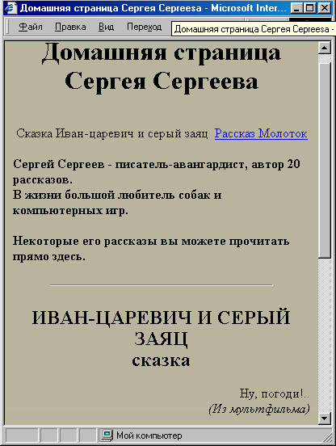
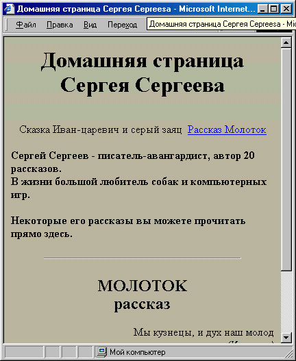
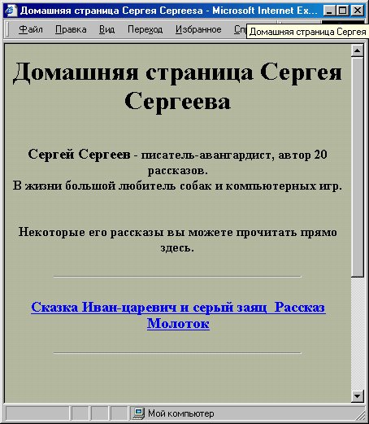

|
|
|
|
7.4. Динамическое отображение текста веб-страницы
В этом разделе мы рассмотрим, какими способами можно динамически изменять текстовое содержание страницы. В предыдущих разделах, как иы помните, мы изменяли, как правило, только внешний вид текстовых ;элементов (цвет текста, начертание шрифта и т. д.). Однако иногда бывает нужно изменить “на ходу” непосредственно текстовое содержание.
Вообще-то говоря, в разделе 7.2 мы уже один раз немного изменяли текст, но это был текст на кнопке. Если помните, тогда мы меняли надписи Сде лать фон белым и Сделать фон зеленым. Надпись на кнопке изменялась при помощи значения атрибута VALUE= тега <INPUT> . Однако что делать, если текст, подлежащий изменению, не является кнопкой?
Давайте рассмотрим такой пример. Предположим, нам надо несколько усовершенствовать “Домашнюю страницу Сергея Сергеева”, которую мы создавали в Главах 1, 2 и 4. К примеру, нам хочется, чтобы сначала на странице отображался только вступительный текст и текст первого рас сказа. А при нажатии на ссылку вместо текста первого рассказа появлялся бы текст второго рассказа и т. д.
(Оказывается, это осуществить очень легко! Заключим для начала текст первого рассказа в блок <DIV> и присвоим ему уникальное имя:
< DIV ID="rasskaz"> <Н2>ИВАН-ЦАРЕВИЧ И СЕРЫЙ ЗАЯЦ<ВР> OPAN STYLE="font-style: italic; ">cкaзкa</SPAN></H2>
<DIV STYLE="text-align: right;"> <DIV CLASS="epig"> Ну, погоди!.. <DIV CLASS="pdps">(Из мультфильма)</DIV> </DIV> </DIV> <BR>
<DIV CLASS="аЬ">Жил да был Иван-Царевич, и все у него было: и злато-серебро, и невест полный дворец, и книжек много умных, и тренажерный зал огромный. Однако тоскливо было у него на душе - как встанет утром с постели царской, так и начнет горевать, и горюет до вечера.</DIV>
<DIV CLASS="аЬ">Долго ли, коротко ли ...</DIV>
<DIV CLASS="аЬ">И они жили долго и счастливо и умерли в один день.</DIV>
<HR> </DIV> Теперь вместо ссылки на второй рассказ напишем просто
<SPAN onClick="show_hammer()">Рассказ «МОЛОTOK»</SPAN>
Как видите, теперь, если пользователь щелкнет мышью на словах Рассказ “Молоток”, то будет выполнена функция show_hammer(). По нашей задумке, она должна заменить текст сказки на текст рассказа “Молоток”.
Вспомним, что весь текст сказки был заключен в блок <DIV> . А у любого блока <DIV> , как и у большинства других элементов, имеется свойство innerHTML, значение которое содержит весь HTML-код данного элемента! Это означает, что если мы изменим значение этого свойства, изменится и HTML-V.OJS,, а значит, и текст, содержащийся на странице. Наша функция show_hammer() может выглядеть, например, вот так:
function show_hammer() { document .all. rasskaz . innerHTML=' <H2>MOЛOTOK<BR>
<SPAN STYLE="font-style: italic ;">paccкaз</SPAN></H2>
<DIV STYLE="text-align: right;">
<DIV CLASS="epig">Mы кузнецы, и дух наш молод.<DIV CLASS="pdps">(Из песни) </DIV></DIV></DIV><BR>
<DIV CLASS="аЬ">Это случилось очень давно, уж и не помню в каком году, в каком веке и в каком тысячелетии. . . (Здесь располагается текст рассказа) </DIV>;
}
Как видите, эта функция выполняет всего одно действие — присваивает свойству document.all. rasskaz. innerHTML значение, содержащее длинную-предлинную строку. В этой строке содержится весь HTML-код, рассказа “Молоток” .
Имитация гиперссылок
Но как пользователь узнает, что на словосочетании Рассказ “Молоток” нужно щелкнуть, как на гиперссылке, для появления текста рассказа на кране? Для этого придется либо действительно оформить его как гипер-ссылку, то есть заключить в тег <А HREF='#'>, либо просто подчеркнуть его, а также изменить вид указателя мыши над ним:
<SPAN STYLE="text-decoration: underline; cursor: hand;" onClick="show hammer()">Рассказ «MonoTOK»</SPAN>
Можно сюда же добавить и изменение цвета, и тогда с точки зрения пользователя эта строка вообще не будет ничем отличаться от гиперссылки. Помните, в предыдущей “версии” этой страницы мы с вами определяли для гиперссылок коричневатый цвет с помощью таблиц CSS:
A:link,A:visited { color: #634438; }
Теперь же наша мнимая гиперссылка на самом деле является элементом <SPAN>.Mы могли бы просто заменить в приведенном выше определении стиля A:link, A:visited на SPAN. Но поскольку этот элемент может использоваться еще для чего-нибудь на той же странице, лучше определим для него специальный класс, допустим, под названием Ink:
.Ink { color: #634438; }
Кстати, подчеркивание и изменение формы указателя мыши можно также внести непосредственно в таблицу стилей:
.Ink { color: #634438; text-decoration: underline; cursor: hand; } Теперь осталось написать сам код нашей мнимой гиперссылки:
<SPAN CLASS="ink" onClick="show_hammer()">Рассказ «МОЛОTOK »</SPAN>
Итак, теперь эта страница приобрела внешний вид, показанный на рис. 7.11. После щелчка на мнимой гиперссылке Рассказ “Молоток” ее вид изменится (см. рис. 7.12).
Вот исходный текст этой страницы.
<!DOCTYPE HTML PUBLIC "-//W3C//DTD HTML 4.0 Transitional//EN">
<HTML>
<HEAD>
<ТITLE>Домашняя страница Сергея Сергеева.</TITLE>
<STYLE>
<!--
BODY { background-color: #BABAAO; color: rgb(29,29,24);

Рис. 7.12. Щелчок на “гиперссылке” изменяет текст в нижней части страницы

Рис. 7.13. Та же страница после щелчка на “гиперссылке”
} Н1,Н2 { text-align: center;
} .Ink ( color: #634438; text-decoration: underline; cursor: hand;
} HR ( margin-top: 24px; width: 75%;
) DIV.epig { text-align: justify; font-size: smaller; width: 130;
} DIV.pdps { font-style: italic; text-align: right;
} DIV.ab { text-align: justify; text-indent: 2em; } --> </STYLE>
<SCRIPT LANGUAGE="JavaScript" TYPE="text/javascript">
<!--
function show_hammer()
{ document. all. rasskaz . innerHTML='
<H2>MOЛOTOK<BR>
<SPAN STYLE="font-style: italic;">paccкaз</SPAN></H2>
<DIV STYLE="text-align: right; "><DIV CLASS="epig">Mы кузнецы, и дух наш молод.<DIV CLASS="pdps">(Из песни) </DIV>
</DIV>
</DIV><BR>
<DIV CLASS="аЬ">Это случилось очень давно, уж и не помню в каком году, в каком веке и в каком тысячелетии... (Здесь располагается текст рассказа) </DIV>';
} //-->
</SCRIPT> </HEAD>
<BODY> <Н1>Домашняя страница Сергея Сергеева</Н1>
<DIV STYLE="text-align: center;">Сказка «Иван-царевич и серый заяц&гаquо;
<SPAN CLASS="lnk" onClick="show_hammer()">Рассказ « ;МОЛОTOK»</SPAN></DIV>
<BR>
<DIV STYLE="font-size: larger; ">
<SPAN STYLE="font-weight: bold;"> Сергей CepreeB</SPAN> — писатель-авангардист, автор 20 рассказов.<BR>
В жизни большой любитель собак и компьютерных игр.<ВR><ВR> Некоторые его рассказы вы можете прочитать прямо здесь.</DIV> <HR>
<DIV ID="rasskaz">
<Н2>ИВАН-ЦАРЕВИЧ И СЕРЫЙ ЗАЯЦ<ВR>
<SPAN STYLE="font-style: italic;">CАKЗKА</SPAN></H2>
<DIV STYLE="text-align: right;"> <DIV CLASS="epig"> Ну, погоди!..
<DIV CLASS="pdps">(Из мультфильма)</DIV> </DIV> </DIV> <BR>
<DIV CLASS="аЬ">Жил да был Иван-Царевич, и все у него было: и злато-серебро, и невест полный дворец, и книжек много умных, и тренажерный зал огромный. Однако тоскливо было у него на душе -как встанет утром с постели царской, так и начнет горевать, и горюет до вечера.</DIV>
<DIV CLASS="аЬ">Долго ли, коротко ли ...</DIV>
<DIV CLASS="ab">И они жили долго и счастливо и умерли в один день.</DIV>
<HR> </DIV> </BODY> </HTML>
Подобная смена содержимого довольно большого фрагмента страницы всегда выглядит привлекательно. Заметьте, что изменение произойдет практически мгновенно, так как весь нужный текст на самом деле загру жается в память пользовательского компьютера еще при загрузке страницы. В момент нажатия на мнимую гиперссылку он уже не должен загружаться через Интернет, а просто отобразится на экране.
Произвольный выбор текста
Однако в таком виде эта страница представляется еще не совсем завер шенной, поскольку, когда на экране отобразится текст рассказа “Молоток”, вернуть обратно текст сказки не удастся (если, конечно, пользователь
сообразит нажать в броузере кнопку Reload (Обновить), но рассчитывать это некорректно). Поэтому надо сделать еще одну мнимую гиперссылку, которая загружала бы текст сказки. Поскольку стиль уже определен, сде-лать это совсем нетрудно:
<SPAN CLA3S="lnk" onClick="show_ivan()">Сказка &1аquо;Иван- царевич и серый заяц&гадио;</SPAN>
Одновременно нужно написать функцию show_ivan(), во всем аналогичную функции show_hammer(). Она должна просто заменять значение свойства document.all.rasskaz.innerHTML обратно на текст сказки:
function show_ivan'() { document.all.rasskaz.innerHTML='
<Н2>ИВАН- ЦАРЕВИЧ И СЕРЫЙ ЗAЯЦ<BR>
<SPAN STYLE="font-style: italic;"> сказка</SPAN></Н2>
<DIV STYLE="text-align: right; ">
<DIV CLASS="epig">Hy, погоди!..
<DIV CLASS="pdps">(Из мультфильма </DIV></DIV>
</DIV><BR><DIV CLASS="аЬ">Жил да был Иван-Царевич, и все у него было: и злато-серебро, и невест полный дворец, и книжек много умных, и тренажерный зал огромный. Однако тоскливо было у него на душе - как встанет утром с постели царской, так и начнет горевать, и горюет до вечера.</DIV><DIV СЬАЗЗ="аЬ">Долго ли, коротко ли. . ,</DIV><DIV CLASS="ab">H они жили долго и счастливо и умерли в один день .</DIV><HR>';
обращаем ваше внимание на то, что .HTML-код, находящийся внутри функции, должен представлять собой одну строку, то есть в нем не должно ододержаться ни одного служебного символа перевода строки, которые мы для удобства иногда вставляем в обычный HTML-текст. Если такие символы в нем останутся, то интерпретатор JavaScript “подумает”, что мы просто написали одну незавершенную строку, а потом еще и начали дру-гую строку с неопределенного объекта. Соответственно, при этом появятся вообщения об ошибках, и страница вообще не будет “работать”.
Честно говоря, определять такие длинные строки в “теле” функции можно, нo неудобно, и потому не принято. Лучше сразу определить переменные, содержащие эти строки, и из функций обращаться уже к этим перемен-
var hammer='<H2>MOnOTOK<BRXSPAN STYLE="font-style: italic;"> paccкaз</SPAN></H2>
<DIV STYLE="text-align: right; ">
<DIV CLASS="ерig">Мы кузнецы, и дух наш молод.<DIV CLASS="pdps">(Из песни) </DIV></DIV></DIV><BR>
<DIV CLASS="аЬ">Это случилось очень давно, уж и не помню в каком году, в каком веке и в каком тысячелетии... (Здесь располагается текст рассказа)
var ivan=' <Н2>ИВАН-ЦАРЕВИЧ И СЕРЫЙ 3AЯЦ <BR>
<SPAN STYLE="font-style: italic; ">CKА3KА</SPAN></H2>
<DIV STYLE="text-align: right;">
<DIV CLASS="epig">Hy, погоди!..
<DIV CLASS="pdps">(H3 мультфильма)</DIV> </DIV></DIV><BR>
<DIV CLASS="аЬ">Жил да был Иван-Царевич, и все у него было: и злато-серебро, и невест полный дворец, и книжек много умных, и тренажерный зал огромный. Однако тоскливо было у него на душе - как встанет утром с постели царской, так и начнет горевать, и горюет до вечера. </DIV><DIV CLASS="аЬ">Долго ли, коротко ли. . .</DIV><DIV CLASS="ab">И они жили долго и счастливо i умерли в один день .</DIV><HR>';
function show_hammer() { document.all.rasskaz.innerHTML=hammer; function show__ivan() ( document.all.rasskaz.innerHTML=ivan; }
Это, во-первых, намного нагляднее, а кроме того, если одна из этих “ строк ” вдруг потребуется еще в какой-либо функции, то можно будет легко к ней обратиться по имени переменной, не вводя всего этого “крокодила” заново. Кстати, теперь, когда у нас есть две мнимые гиперссылки на оба текста, можно первоначально не отображать на экране ни один из них:
<DIV ID="rasskaz"> </DIV>
Такое начало будет смотреться эффектнее (рис. 7.14), а заодно мы избавимся
от дублирования кода. Кстати, если вам все-таки хочется сразу отобразить текст какого-либо из рассказов, то все равно не следует вводить один и тот же HTML-код второй раз, особенно если он длинный. Лучше напишите что-нибудь вроде
<BODY onLoad="show ivan()">

Рис. 7.14. На этой странице изначально не видно ни одного из рассказов
Теперь еще одна маленькая деталь. Хорошо бы сделать так, чтобы мнимая
гиперссылка на тот текст, который уже отображается на экране, в выглядела бы, как гиперссылка. Этого легко достичь, поскольку вид определен как класс в таблице стилей. Итак, определим еще один класс для “посещаемой в данный момент” части страницы:
. Ink() { color: rgb(29,29,24) ;
text-decoration: none; cursor: default;
} В данном случае мы определили внешний вид текущего текста таким же, как вид обычного текста, однако можно было придумать и какое-нибудь особое начертание). Теперь модифицируем наши функции show_ivan() и show_hammer() так, чтобы они изменяли класс (а значит, и внешний вид) наших мнимых гиперссылок: function show_hammer()
{ document, all .rasskaz . innerHTML=hanimer;
document.all.ivanink.className="lnk";
document.all.hammerlnk.className="lnk0";
} function show_ivan() { document.all.rasskaz.innerHTML=ivan;
document.all.ivanink.className="lnk0";
document.all.hammerlnk.className="lnk";
} Обратите внимание на то, что для доступа к атрибуту CLASS= нужно исполь- повать свойство className, а не class, поскольку слово class является заре- зервированным ключевым словом JavaScript.
Разумеется, если на странице сменяют друг друга не два, а три, четыре, десять или более подобных текстов, можно действовать точно так же. Однако здесь есть две тонкости.
Во-первых, при наличии, например, 100 сменяющихся текстов, при щел чке на одной из мнимых гиперссылок нужно определить, какой из них нужно вернуть внешний вид гиперссылки (класс Ink). Придется опреде лить глобальную переменную и каждый раз записывать в нее имя исполь зованной ссылки. Например, если назвать эту переменную, допустим, oldink, то наша функция show_hammer() приобретет такой вид: function show_hammer()
{ document.all.rasskaz.innerHTML=hammer;
document.all[oldink].className="lnk";
document.all.hammerlnk.className="lnkO";
oldlnk='hammerlnk'; }
При этом лучше сразу при инициализации присвоить переменной oldlnk имя одного из идентификаторов, чтобы не делать лишнюю проверку, не является ли oldink пустой строкой. Да и вообще, если сменяющихся текстов много, лучше не писать для отображения каждого отдельную функ цию, а просто написать обобщенную функцию show(), которая может полу чать идентификатор ссылки в качестве аргумента или даже просто брать его из значения свойства window.event.srcElement.
Вторая тонкость заключается в следующем. Не забывайте, что все тексты при данном подходе загружаются из Интернета сразу (а щелчки на мни мых гиперссылках только управляют их отображением). Поэтому при большом их количестве на странице при первоначальной загрузке не будет отображено вообще ничего, пока они все не загрузятся. Для пользователя это может означать длительное ожидание перед пустым экраном, то есть весьма сомнительное удовольствие. Лучше попытаться этого избежать. Например, можно расположить эти тексты уже после тега <BODY> — тогда они начнут загружаться одновременно с отображением страницы, и пользователь вместо ожидания перед пустым экраном сможет за время загрузки почитать вступительный текст, а то и текст первого рассказа. Другим выходом может стать загрузка текстов по мере необходимости. Для этого можно применить, например, фреймы.
|
|
|
|